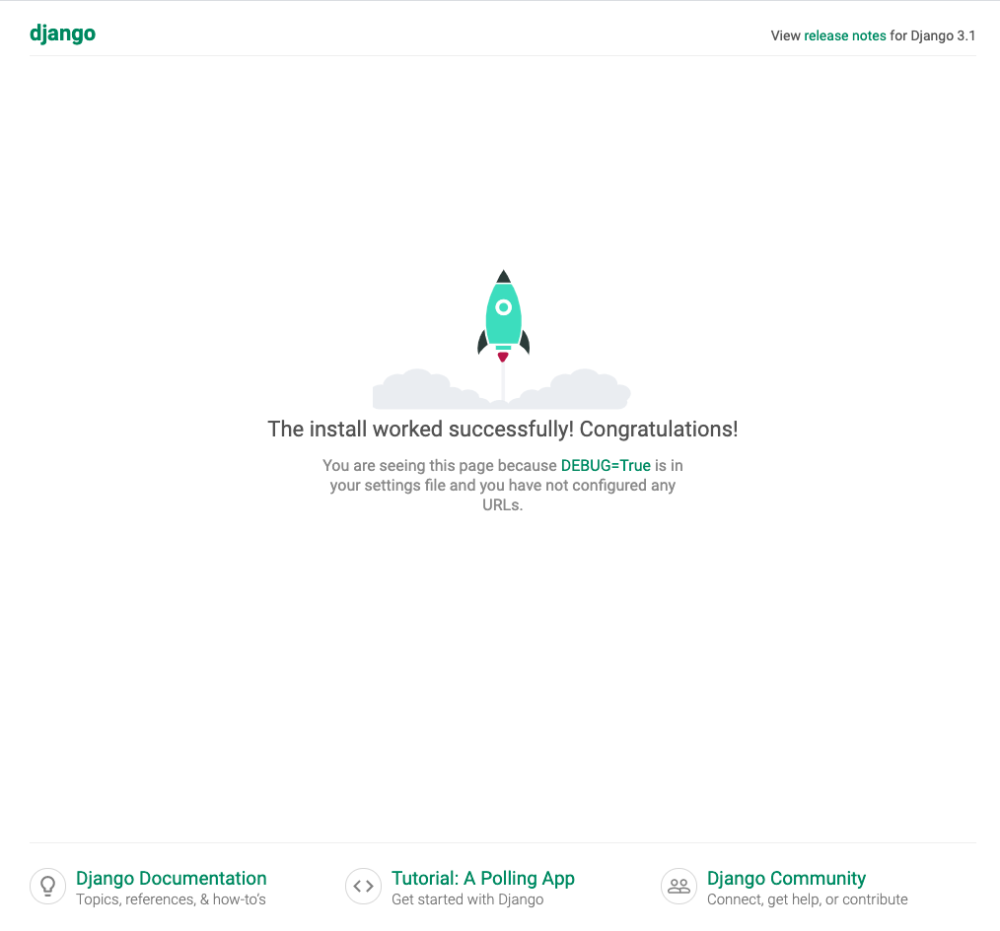
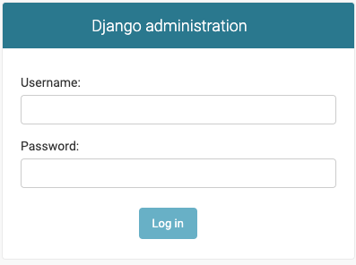
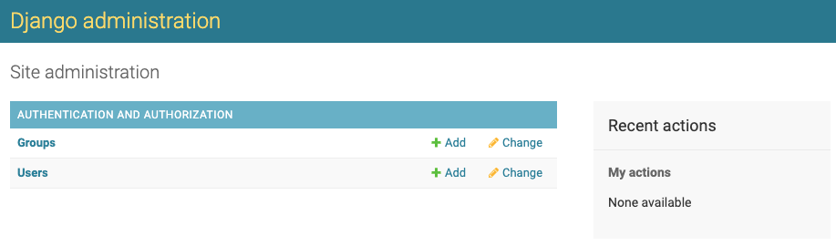
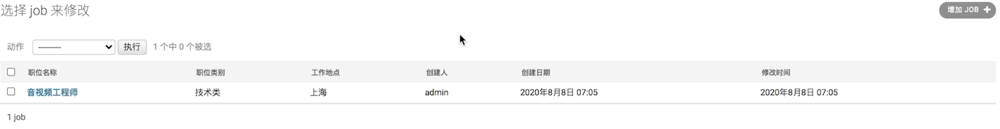

Django快速上手
了解了Django的基本特点，并完成了相关开发环境准备后，接下来，我们将会从一个最简单的示例开始进行Django的学习。
创建第一个项目
Step1: 创建一个会议室管理项目，项目名称为meetingroom.
django-admin startproject meetingroom
cd meetingroom
Step2: 启动项目
python manage.py runserver 0.0.0.0:8080
Step3: 开发浏览器，访问 http://127.0.0.1:8080。
正常情况下，你会看到如下内容：

初识后台管理系统
Django的一大优势是其自带了一个强大的后台管理系统，及时不写一行前端代码，也能够有一个配套的Web页面进行相关的管理操作。
下面，我们就来了解一下Django的后台管理系统吧。
打开浏览器，访问 http://127.0.0.1:8080/admin ，你将会看到如下登录框：

但是，我们好像还没有创建任何用户呢！
下面，我们就先来创建一个用户。
创建用户之前，我们首先需要初始化Django内置表的数据库。
Ps: 由于Django默认使用了sqlite数据库，因此，再前期的实验环节，我们就不在额外搭建数据库了，而是使用默认的sqlite数据库。
初始化内置表的数据库的命令如下：
python3 manage.py migrate
# Operations to perform:
# Apply all migrations: admin, auth, contenttypes, sessions
# Running migrations:
# Applying contenttypes.0001_initial... OK
# Applying auth.0001_initial... OK
# Applying admin.0001_initial... OK
# Applying admin.0002_logentry_remove_auto_add... OK
# Applying admin.0003_logentry_add_action_flag_choices... OK
# Applying contenttypes.0002_remove_content_type_name... OK
# Applying auth.0002_alter_permission_name_max_length... OK
# Applying auth.0003_alter_user_email_max_length... OK
# Applying auth.0004_alter_user_username_opts... OK
# Applying auth.0005_alter_user_last_login_null... OK
# Applying auth.0006_require_contenttypes_0002... OK
# Applying auth.0007_alter_validators_add_error_messages... OK
# Applying auth.0008_alter_user_username_max_length... OK
# Applying auth.0009_alter_user_last_name_max_length... OK
# Applying auth.0010_alter_group_name_max_length... OK
# Applying auth.0011_update_proxy_permissions... OK
# Applying auth.0012_alter_user_first_name_max_length... OK
# Applying sessions.0001_initial... OK
可以看到，我们创建了admin, auth, contenttypes, sessions等相关的数据库表。
下面，我们就可以使用命令行来添加用户了：
python3 ./manage.py createsuperuser
# Username: missshi
# Email address: wangzhe0912@tju.edu.cn
# Password:
# Password (again):
# Superuser created successfully.
可以看到，输出createsuperuser子命令后，会提供交互式命令行接收用户名、邮箱、密码等相关参数。
全部信息输入完成后，我们想要创建的用户也就创建完成了，下面我们可以用刚才创建的用户登录看看。
登录成功后，正常情况下你将会看到如下页面：

可以看到，在这个页面中，我们可以看到Groups和Users两种对象，这些都是Django框架内置的功能。
此时，如果你点击Users进入到User列表页面的话，还能够看到你刚才创建的用户。
甚至，你已经可以在这个页面中进行用户、用户组的创建和管理了。是不是非常赞呢？
编写一个应用
下面，我们需要编写一个职位管理系统的应用，这个应用需要实现的功能为管理员能够发布职位。
数据建模
在应用开发前，我们首先需要对核心数据对象进行建模，即针对核心对象，设置它有哪些字段等。
对于我们的职位管理系统的应用而言，最核心的对象就是职位了。
一条职位记录应该包括如下字段：
- 职位名称
- 类别
- 工作地点
- 职位职责
- 职位要求
- 发布人
- 发布日期
- 修改日期
创建应用
当我们对数据建模完成后，我们就需要创建应用了。
创建应用同样用到的是manage.py脚本：
python manage.py startapp jobs
执行该命令后，我们可以看到会自动在当前目录中创建一个jobs的子目录。
可以看到，每个创建的app目录下都会自动生成如下文件：
admin.py
apps.py
models.py
tests.py
views.py
migrations目录
Ps: 需要注意的是，我们每创建一个应用后，需要修改整个项目的settings.py文件，并在其中的INSTALLED_APPS中增加对应app的名称，如jobs。
定义models文件
下面，我们需要修改jobs目录下的models.py文件，将我们针对职位建立的模型转化为代码写入models.py文件中。
from django.db import models
from django.contrib.auth.models import User
JobTypes = [
(0,"技术类"),
(1,"产品类"),
(2,"运营类"),
(3,"设计类"),
(4,"市场营销类")
]
Cities = [
(0,"北京"),
(1,"上海"),
(2,"深圳"),
(3,"杭州"),
(4,"广州")
]
class Job(models.Model):
"""
# 职位建模
"""
job_id = models.CharField(blank=False, primary_key=True, unique=True, max_length=255, verbose_name="职位ID")
job_type = models.SmallIntegerField(blank=False, choices=JobTypes, verbose_name="职位类别")
job_name = models.CharField(max_length=250, blank=False, verbose_name="职位名称")
job_city = models.SmallIntegerField(choices=Cities, blank=False, verbose_name="工作地点")
job_responsibility = models.TextField(max_length=1024, verbose_name="职位职责")
job_requirement = models.TextField(max_length=1024, blank=False, verbose_name="职位要求")
creator = models.ForeignKey(User, verbose_name="创建人", null=True, on_delete=models.SET_NULL)
created_date = models.DateTimeField(verbose_name="创建日期", auto_now_add=True)
modified_date = models.DateTimeField(verbose_name="修改日期", auto_now=True)
其中，models中定义了多种数据格式，如SmallInteger、Char、Text、DateTime等，另外ForeignKey表示外键引用，主要用户表与表的关联，例如此处creator就对应着系统内部的用户。
上述做用到的参数的作用如下：
- blank表示是否允许为空。
- choices表示对于枚举类型而言可以选的值，接收一个数组参数，每个数组元素又是有(value, alias)的元组组成的。
- verbose_name表示其别名，可以在admin管理后台中可见。
- max_length表示字符串最大的长度。
- on_delete参数主要用户外键引用，表示当引用的对象被删除后，相关的记录应该如何处理，SET_NULL表示关联数据被删除后，设置该字段为null。另外，当on_delete为SET_NULL时，需要设置该字段允许为空，即null=True
- auto_now_add表示首次添加记录时设置为当前时间。
- auto_now表示每次记录更新时，设置为当前时间。
- primary_key表示主动设置主键，如果没有主动设置主键，默认则会创建一个_id字段作为主键。
- unique表示该字段是否有唯一性限制。
将Model注册当管理后台
上面的步骤中，我们创建了Job对应的Model相关的定义，但是为了能让我们的管理后台可以支持model的增、删、改、查等操作，我们需要将model注册到管理后台。
我们需要修改jobs目录下的admin.py文件:
from django.contrib import admin
from jobs.models import Job
admin.site.register(Job)
同步数据库结构
上面，我们虽然已经定义了models对象，并注册到了管理后台，此时你访问管理后台应该也已经可以看到Jobs菜单了。
但是点击查询Jobs信息时，一定会看到一些报错，这是为什么呢？
答案是我们虽然定义了数据对象，但是并没有在数据库中创建对应的表，导致Django在按照数据结构进行读写数据库时一定会引发报错。
下面，我们来看一下如何同步数据库，我们还是用到了manage.py脚本。
Step1: 生成同步脚本
python3 ./manage.py makemigrations
执行该命令后，可以看到，我们会在Job对应的migrations目录下生成一个0001_initial.py脚本，这个就是创建数据库的工具。
Step2: 执行同步脚本，同步数据库
python3 ./manage.py migrate
执行该命令后，相当于执行了刚才生成的0001_initial.py脚本，真实的在数据库中创建了对应的job表。
体验一下吧
下面，我们再次打开admin后台页面，我们就已经可以直接用后台管理页面进行Job相关的管理了。
管理后台体验优化
在上面的内容中，我们已经能够实现可以通过后台管理页面进行职位的增、删、改、查操作了，但是整体来说，用户体验并不好， 接下来，我们将会了解如何一步步的优化管理后台，从而使得整个后台的管理页面一步步优化。
默认值设置
在刚才新增Job时，其中有一些字段我们希望能够显示一些默认值，例如创建日期我们期望能够默认显示当前时间等。
默认值的设置非常简单，我们只需要在Model字段的定义中增加default属性即可，例如。
import datetime
created_date = models.DateTimeField(verbose_name="创建日期", default=datetime.now)
职位列表页中显示指定字段
创建对应的Job后，此时访问Job列表页，你看到的记录目前仅仅是Job object，这种显示方式非常不友好，我们希望能够在列表页中显示出Job的一些核心属性。
这些，我们需要在admin.py中进行定制，即创建JobAdmin类并赋值list_display属性对应的字段名称。
class JobAdmin(admin.ModelAdmin):
list_display = ('job_name', 'job_type', 'job_city', 'creator', 'created_date', 'modified_date')
# admin.site.register(Job)
admin.site.register(Job, JobAdmin) # 注册时需要将JobAdmin一起进行注册
此时，再次访问列表详情页面时，我们应该就已经可以看到字段的信息了。

表单中隐藏默写字段
在新增Job时，有些字段我们希望直接设置为默认值，并不需要在表单中显示，例如创建人字段。
针对这种场景，我们同样需要在admin.py中进行定制，这次需要用到的是exclude属性:
class JobAdmin(admin.ModelAdmin):
exclude = ('creator','created_date','modified_date')
此时，再次进入新增、编辑等页面时，我们将会无法看到这些字段信息，也无法修改这些字段内容。
那么，就有一个问题，这些字段应该如何进行赋值呢？default属性设置默认值是一种方式，下面，我们来介绍另外一种方式:
default属性设置默认值仅限于默认值固定的场景，但是对于默认值可能会发现变化的场景，此时，我们需要用到Admin类的save_model方法。
例如，我们希望creator字段值为当前登录用户时：
class JobAdmin(admin.ModelAdmin):
def save_model(self, request, obj, form, change):
if obj.creator is None:
obj.creator = request.user
super().save_model(request, obj, form, change)
在上面的方法中，我们接收了request,obj,form,change四个参数。
其中，request表示当前请求的对象，obj表示当前记录对象。
我们将当前请求用户设置为当前job记录的creator属性值，然后再次调用save_model父类方法即可实现动态默认值的功能。